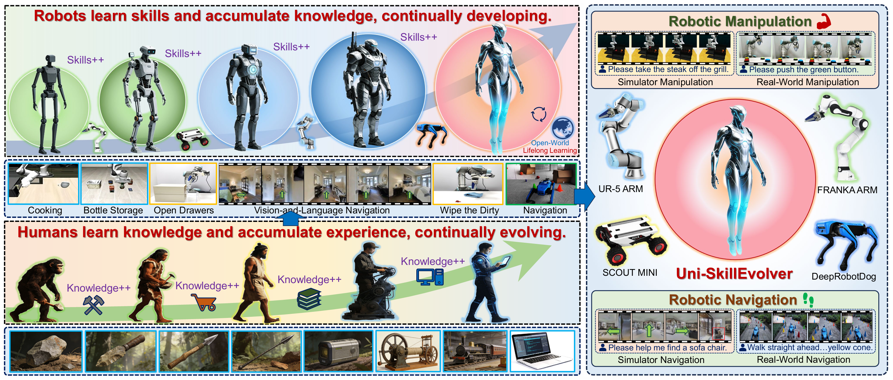
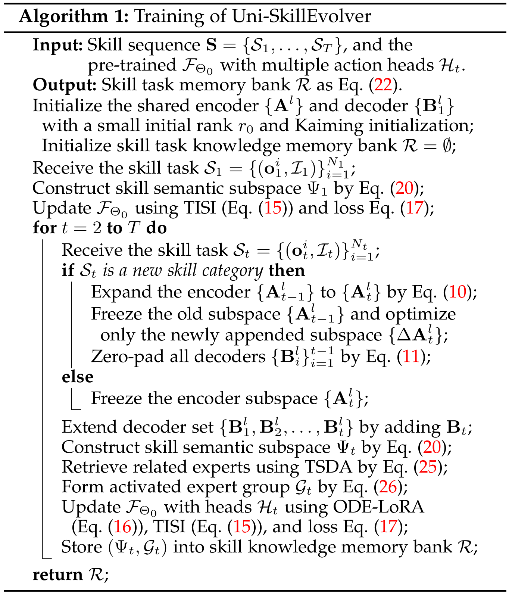
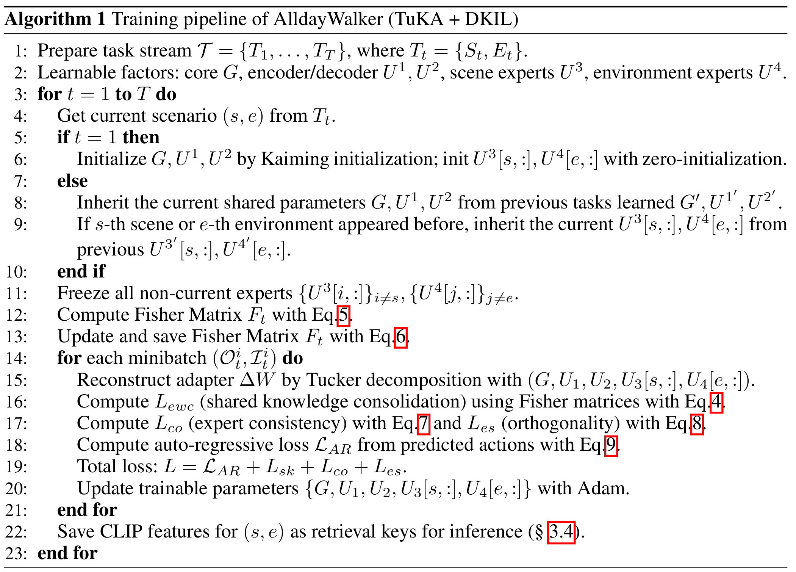
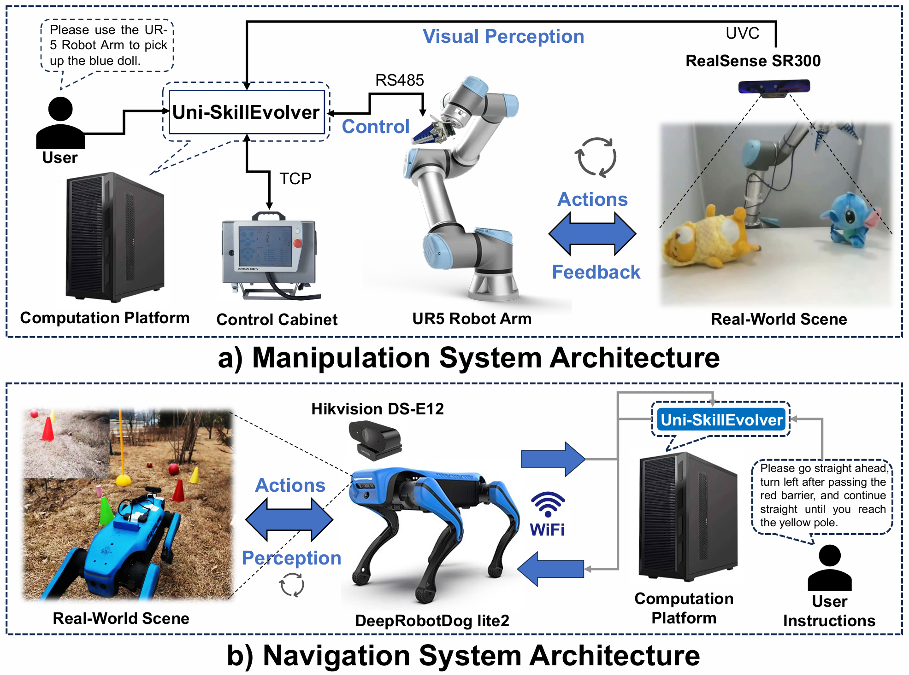
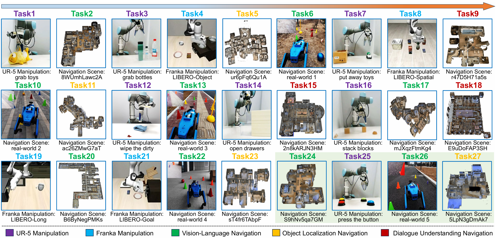
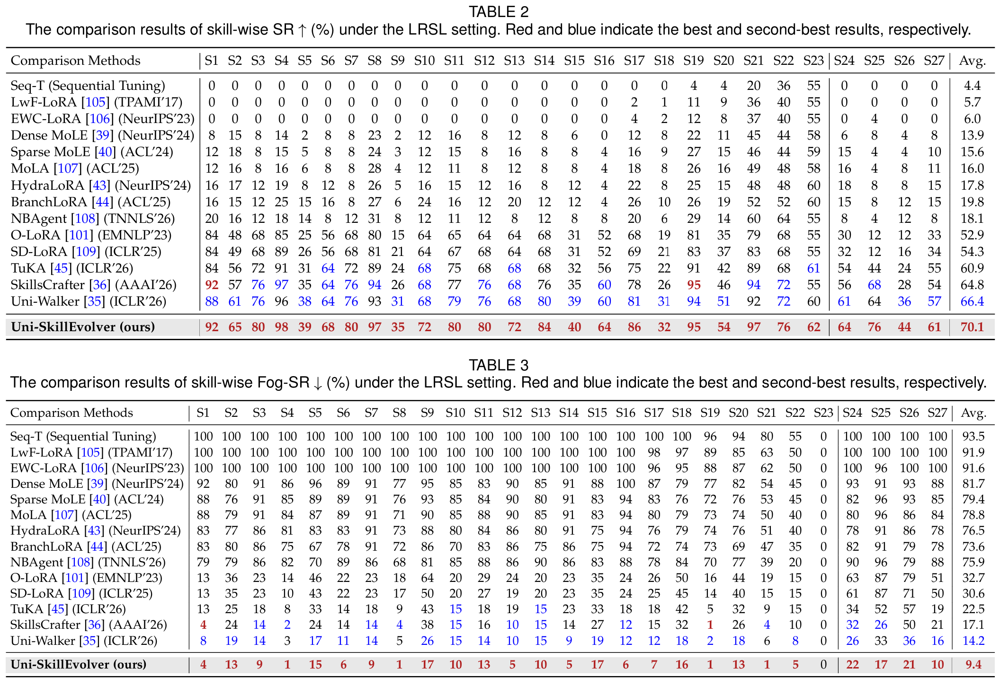
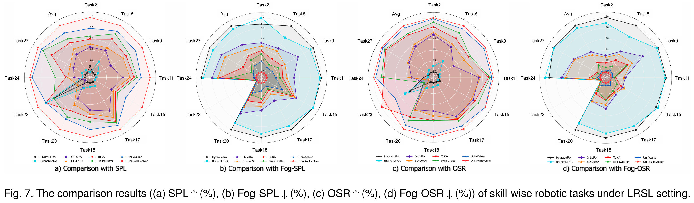

All-Day Multi-Scenes Lifelong Vision-And-Language Navigation With Tucker-Adaption
1 State Key Laboratory of Robotics and Intelligent Systems, Shenyang Institute of Automation, Chinese Academy of Sciences
2 North University of China
3 University of Chinese Academy of Sciences
4 Xi'an Jiaotong University
* Equal contribution. † Corresponding author.

Abstract
Method

Illustration for comparison of existing LoRA and our TuKA architecture. Different from the LoRA or MoE-LoRA variants, which represent simple knowledge within a two-hierarchical matrix, TuKA decoupling represents the multi-hierarchical knowledge within a high-order tensor.

AlldayWalker Algorithms


For clarity, a summary of the proposed AlldayWalker learning algorithm and the inference algorithm is provided above.
Task Setting

Illustration of our all-day multi-scenes lifelong VLN Benchmark setting. The normal environment is marked in green color, low light is marked blue, scattering is marked yellow, and overexposure is marked in purple.
Real-World Experiments
robotic navigation system introduction

Vision-Language Navigation in Real World
Task21
Walk straight ahead, bypass the pole on the left, and find the cup in the middle of the blue cone and in front of the yellow cone.Task22
Find the red cone-shaped barrel on the right, pass through from the left side, then pass to the right of the blue cone-shaped barrel in front, and finally find the red ball next to the cardboard box.Task23
Walk straight, pass around the left side of the cardboard box, and find the Cube located in front of the blue cone.Task24
Pass through the left side of the blue cone-shaped barrel on the right, go around the left side of the cardboard box to the back of the box, and find the small red ball.Habitat Simulator Experiments
Allday-Habitat simulation platform

Scattering environments: Created using atmospheric scattering models that simulate how particles in the air (like fog, haze, or dust) affect image clarity by reducing visibility and adding atmospheric light.
Low-light environments: Generated using abnormal light imaging models that account for reduced illumination conditions, incorporating factors like camera response functions, system gain, exposure time, and various types of noise.
Overexposure environments: Synthesized using models that simulate excessive brightness conditions, where parts of the image become saturated due to too much light, resulting in loss of detail in bright regions.
Visual Examples for Allday-Habitat
Habitat Natural Light
Scene Simulator

Simulating Scattering Scenes Based on Atmospheric Scattering Model

Simulating Low-light Scenes Based on Camera Response Model

Simulating Overexposure Scenes Based on Camera Response Model

Vision-Language Navigation in Habitat Simulator
Task1
Go out of the room an take an immediate left. When you reach the hallway, go right. The second door on the left is a powder room, go in and wait there.Task2
Go straight and into the bedroom to the left of the stairs. Stop in the large doorway to the right of the bed.Task3
Exit the room using the door on the right. Turn left and go through the kitchen. Go past the table and chairs and wait near the stairs on the right.Task4
Exit study and turn left. Stop at double doors and tall planter.Task5
Enter the room go out the door on the right turn left and wait right at the living room entrance.Task6
Walk past the mirror on your right, and continue to walk down the hallway. Walk into the room directly right of the doorway in front of you, and stop once you walk in.Task7
Enter the house and walk around the chair to the open door on your right. Walk through the open door just to the left of the stairs. Walk to the end of the hall and turn left. Enter the bedroom and wait by the fireplace.Task8
Leave the room, then take the left door in the next room. Turn left and go all the way down the hallway into the walk-in closet.Task9
Walk straight through the doorway and take a right. Walk straight through the bathroom and stop passed the sink.Task10
Walk into the office and turn left. Walk into the bedroom and turn left. Walk down the hall and turn left. Walk into the bathroom and stop.Task11
Turn around and go down the long hallway. Turn the right corner, and turn left into the bathroom.Task12
Walk out of the bathroom and take a left and walk straight, down the hall, into the bedroom. In the bedroom stop next to the photo of sailboat on your right.Task13
Walk outside and pass the outdoor furniture. Make a left before you reach the table, and enter the inside room on the left. Wait here.Task14
Walk toward the fireplace. Exit the room and turn left. Stop in front of the double doors and tall potted plant.Task15
Walk straight down the hall and into the room straight ahead. Wait near the entrance.Task16
Walk into the hardwood floored room, heading towards the fireplace at the opposite end. Once you're at the fireplace, turn right and go into the room ahead of you.Task17
Enter the room go out the door on the right turn left and wait right at the living room entrance.Task18
Exit the room with the TV, into the room with a wooden desk with two office chairs. Exit that room through the double doors, into the curving hall. Turn into the first room on the right and stop in the doorway.Task19
Turn right and exit into the bedroom. Turn left and walk to the wall and then turn left. Walk to the end of that area and turn right out the last door. Once out the door walk across the small room and enter the door to the far left. Stop once you enter the bedroom.Task20
go straight down hall to archway on your left turn left and walk straight to first doorway on your right, stop in doorway.Comparison Experiment Results


Test results ( (a) SPL ↑, (b) F-SPL ↓, (c) OSR ↑, (d) F-OSR ↓) of comparison experiment under the AML-VLN settings.
Extension Experiments


Illustration of the fifth-order tensor TuKA architecture.